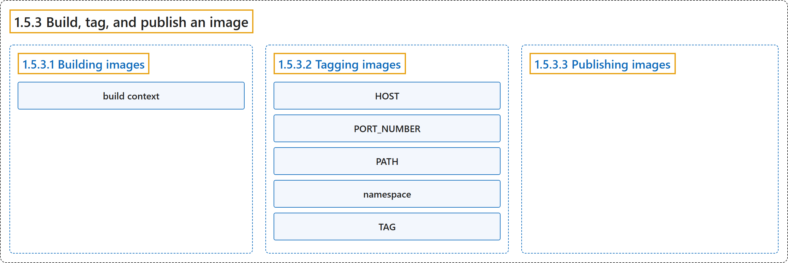

1.5.3 Build, tag, and publish an image
Classification

Glossary
| Term | Definition | 中文翻译 | Source |
|---|---|---|---|
| 1.5.3 Build, tag, and publish an image 构建、标记和发布镜像 |
(No definition) | （无定义） | Docker Inc., n.d., "Build, tag, and publish an image" |
| 1.5.3.1 Building images 构建镜像 |
"Building images - the process of building an image based on a Dockerfile" |
构建镜像：构建镜像的过程，基于一个 Dockerfile |
Docker Inc., n.d., "Explanation", para. 2 |
| build context 构建上下文 |
(context) "The final . in the command provides the path or URL to the build context." |
（语境）命令末尾的 . 提供了构建上下文的路径或 URL。 |
Docker Inc., n.d., "Building images", para. 2 |
| 1.5.3.2 Tagging images 标记镜像 |
"Tagging images - the process of giving an image a name, which also determines where the image can be distributed" | 标记镜像：为镜像命名的过程，名称也决定了镜像可以分发到哪里 | Docker Inc., n.d., "Explanation", para. 3 |
| HOST HOST |
"HOST: The optional registry hostname where the image is located." |
HOST：可选的注册表主机名，即镜像所在之处。 |
Docker Inc., n.d., "Tagging images", para. 2 |
| PORT_NUMBER PORT_NUMBER |
"PORT_NUMBER: The registry port number if a hostname is provided" |
PORT_NUMBER：注册表的端口号，当提供了主机名时 |
Docker Inc., n.d., "Tagging images", para. 3 |
| PATH PATH |
"PATH: The path of the image, consisting of slash-separated components." |
PATH：镜像的路径，由斜杠分隔的各部分组成。 |
Docker Inc., n.d., "Tagging images", para. 4 |
| namespace 命名空间 |
"For Docker Hub, the format follows [NAMESPACE/]REPOSITORY, where namespace is either a user's or organization's name." |
对于 Docker Hub，格式为 [NAMESPACE/]REPOSITORY，其中命名空间是用户或组织的名称。 |
Docker Inc., n.d., "Tagging images", para. 4 |
| TAG TAG |
"TAG: A custom, human-readable identifier that's typically used to identify different versions or variants of an image." |
TAG：一个自定义、便于阅读的标识符，通常用来区分镜像的不同版本或变体。 |
Docker Inc., n.d., "Tagging images", para. 5 |
| 1.5.3.3 Publishing images 发布镜像 |
"Publishing images - the process to distribute or share the newly created image using a container registry" | 发布镜像：分发或共享新创建镜像的过程，使用容器注册表 | Docker Inc., n.d., "Explanation", para. 4 |
References
Docker Inc. (n.d.). Build, tag, and publish an image. Docker Docs. Retrieved October 31, 2026, from https://docs.docker.com/get-started/docker-concepts/building-images/build-tag-and-publish-an-image/